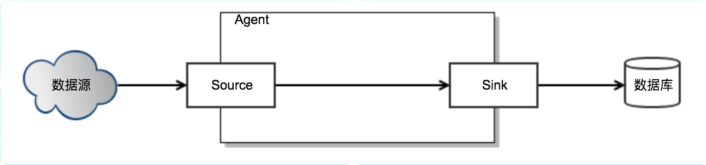
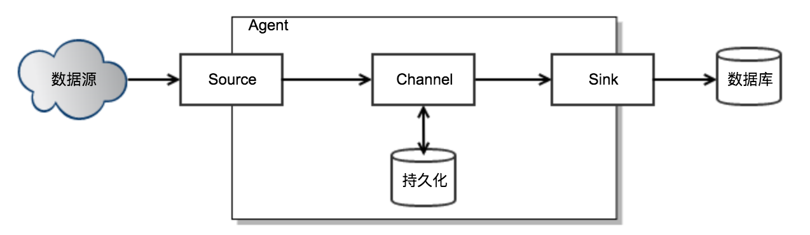
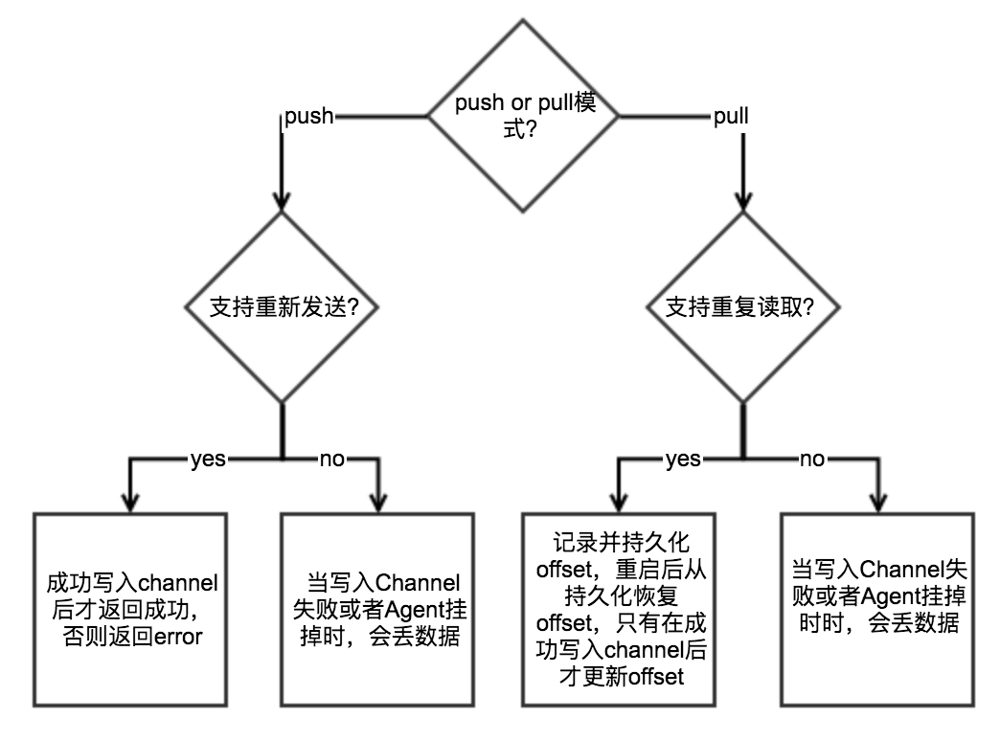
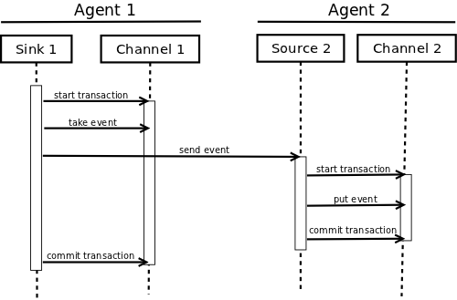
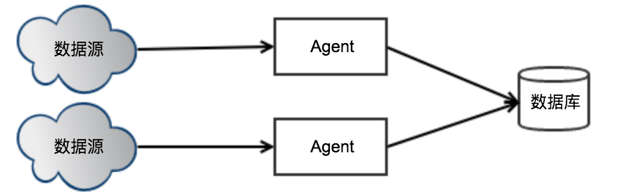
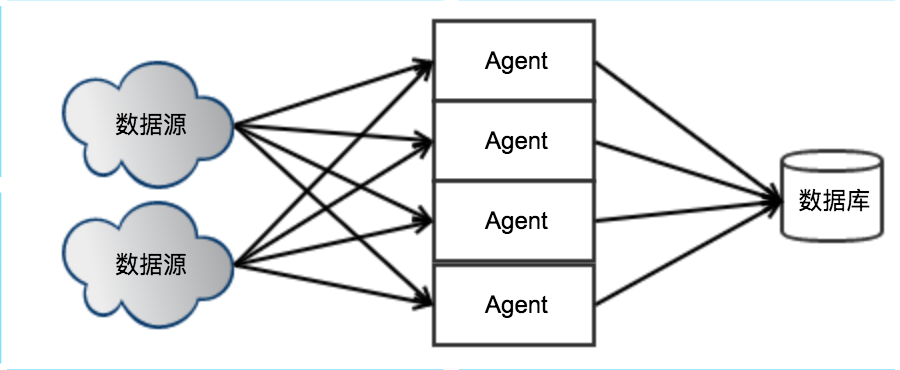
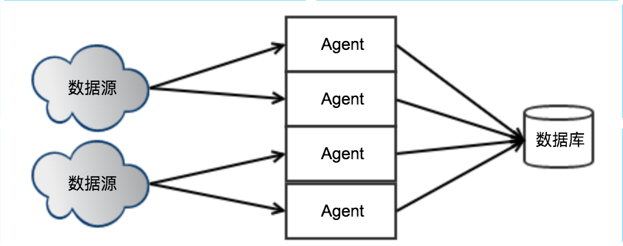
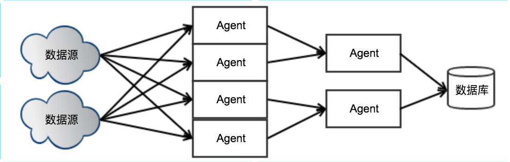

Flume NG是Cloudera提供的一个分布式、可靠、可用的系统，它能够将不同数据源的海量日志数据进行高效收集、聚合、移动，最后存储到一个中心化数据存储系统中。
本文试图还原Flume的设计者设计Flume架构的过程。
Flume的架构设计主要需要考虑：
设计单机版的Flume需要考虑：
于是可以抽象出以下几个概念：
整个Flume Agent的逻辑就是，不断读取Source，变成内部的Event，然后把Event写到Sink。

实现了简单的读取和写入的架构以后，接下来需要考虑一个实际问题：如何解决生产者速度 > 消费者速度的问题？当生产者速度 > 消费者速度时，生产者会被阻塞，这对日志收集系统是不能容忍的。
这个问题一个经典的解法就是在生产者和消费者之间加缓冲区：Channel。Agent中的Source线程负责读取数据并写到Channel，Sink线程负责从Channel中读取数据并写到外部数据库。

Source是否能支持不丢数据，取决于接收数据的模式和Source的特性：

Sink写数据在返回成功后再从Channel中删除数据。
Sink要在下游数据写到Channel后再从Channel中删数据，如果下游失败则回滚。

要想让Flume支持高并发，前提是Source需要支持多个消费者访问。只需要部署多个Flume Agent，每个Agent读取数据源的某个部分，就可以轻松实现高并发。

当部署了多个Agent后，如果某个Agent所在机器挂了，Agent无法重启，就会导致该Agent负责的数据无法读取，导致数据丢失。
解决办法：同一个数据源被分配给多个Agent，当某个Agent无法工作时，其他的Agent会接手这部分数据的传输任务。

假设数据源数量=n,每个Source会保存一个连接到数据源，即Source的连接数=n，当n变大后，Source无法同时保持很大的连接数。
解决办法：将Agent分组，某个组里面分配m个Agent，某个数据源只连接到某个分组，当n增大时可以通过增加分组数来减少连接数，当每个分组的Agent数量变少时，可以通过增加Agent来保持每个分组的Agent数量。

每个Agent Sink都会和数据库保持一个连接，当Agent变多时，连接数最终会超过数据库的限制。
解决办法：将Agent进行分层。
